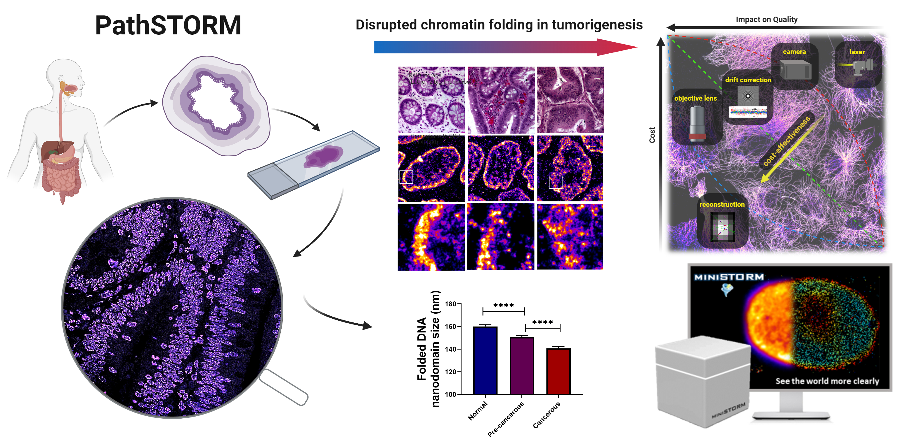
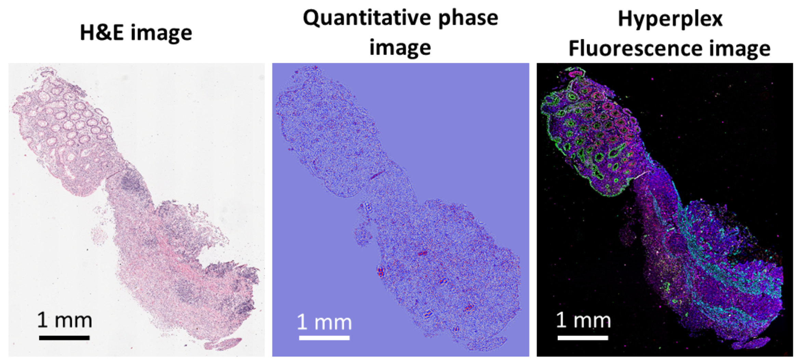

Welcome to Dr. Yang Liu's Research Laboratory at University of Illinois Urbana-Champaign

Visualizing spatial epigenome at the nanometer scale

Detecting cancer pathogenesis at nanometer resolution
